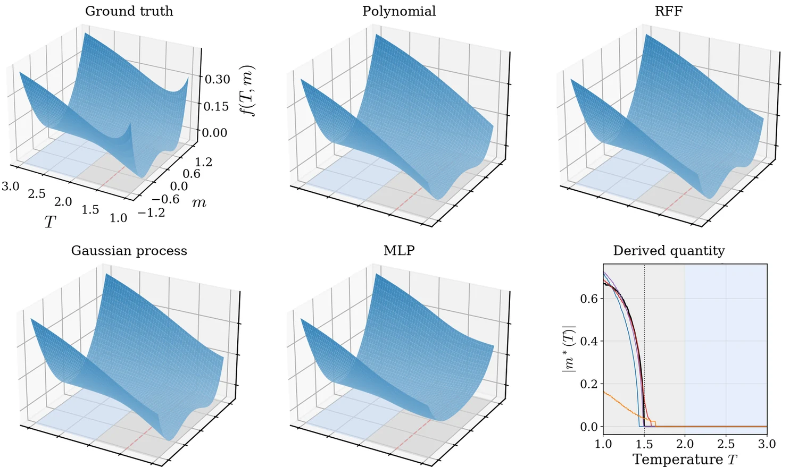
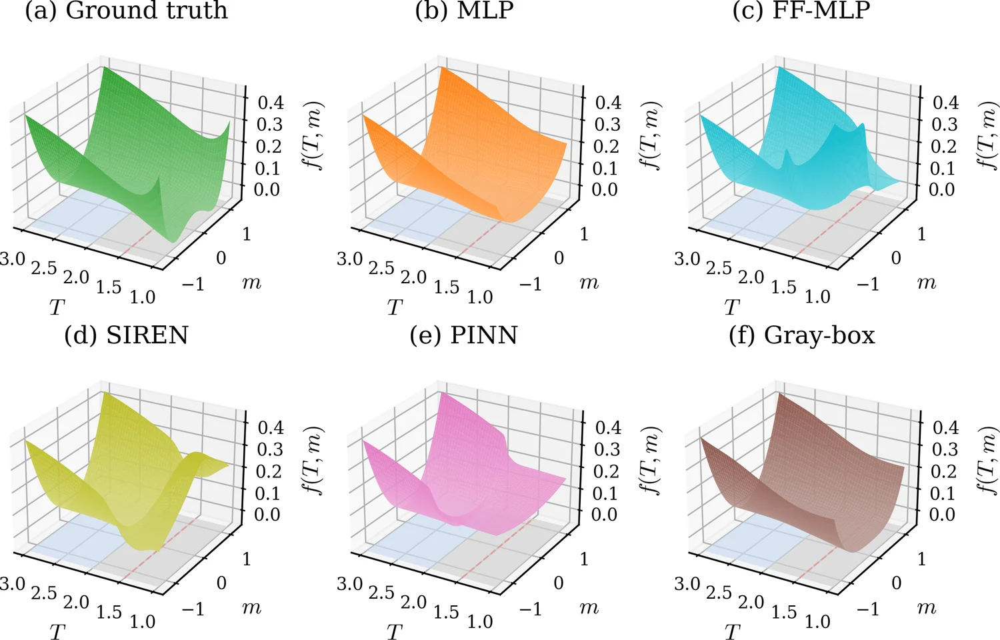

Bounds on Extrapolation Across Phase Transitions with Generalized Regression
NeurIPS 2026
Also presented at the ICML 2026 AI4Physics Workshop
“One of the ways of stopping science would be only to do experiments in the region where you know the law.”
A major goal of theoretical physics is to make predictions in regimes where information is limited or inaccessible. Continuous phase transitions are the canonical example, yet it is not known which models extrapolate across them or how large their error can be before the unobserved phase is measured. We show that fixed-feature regression trained on a single phase recovers the unobserved one while neural networks do not, and that its error obeys a sample-free bound that grows only as a power law in the distance to the transition.
Can a model trained only on one phase predict the other?
Heat a magnet past its critical temperature Tc and its magnetization disappears. Cool it back down and the magnetization returns. This is a continuous phase transition, in which a smooth physical observable gives rise to nonanalytic behavior in derived quantities. In the ferromagnet below, the Landau free energy has a single minimum at m = 0 above Tc. Below Tc it splits into two minima at ±m*, and the magnet acquires a net magnetization.
We fit each model only on a training region P above Tc and test it on an extrapolation region Q that extends across Tc. In P the magnetization is zero everywhere, so the clearest sign of the coming transition is that the curvature of the free energy at m = 0 shrinks as T approaches Tc. To predict the double well, a model has to continue that trend across Tc.
Fixed-feature regression extrapolates across the transition
Extending the GP study of [Vargas-Hernández et al. 2018], we evaluate on five continuous transitions: two analytic free energies (Heisenberg, Flory–Huggins), two numerical simulations (SSH polaron, Rayleigh–Bénard convection), and one experiment (ARPES on a cuprate superconductor). For each, we compare the predicted observable with the ground truth on Q and extract the derived nonanalytic quantity from the predicted surface. Polynomial, RFF, and GP locate the critical point to within a few percent on every target with a sharp transition. The MLP fits the training phase to numerical precision but misplaces the transition on each of them.

Past the outermost kink of its activations, a ReLU network continues affinely, with a slope the training data do not determine. GELU networks become asymptotically affine, tanh networks saturate, and sinusoidal networks such as SIREN repeat frequencies learned on P, so none of them can produce the change in curvature that splits the single well into two below Tc. Polynomial, RFF, and GP features stay non-affine past the boundary of P and carry the curvature learned there into Q. The same neural network extrapolation failure is apparent across all other datasets.

Fixed-feature Regression Empirically Extrapolates
Polynomial, RFF, and GP recover the unobserved phase on all five systems, while neural networks do not.
A sample-free bound on the extrapolation error
We measure extrapolation reliability with the transfer coefficient Γemp, the ratio of the mean squared error (MSE) on Q to the MSE on P. Polynomial and RFF models both predict with a weighted sum of fixed features φ, monomials for the first and cosines for the second. When the residual r = f* − f̂ is such a sum as well, its mean square on each region is set by the feature covariance there, B = EP[φφ⊤] on P and A = EQ[φφ⊤] on Q.
On a narrow training window the features are strongly correlated, so B is thin in some directions while A can be wide in them (Fig. 5). A residual along such a direction is nearly invisible on P and large on Q. The worst direction is the top generalized eigenvector of A and B, and its eigenvalue is the GEVP bound, ΓGEVP = λmax(A, B), which guarantees MSEQ ≤ ΓGEVP · MSEP. Both covariances use only the known measures on P and Q, so the bound requires no samples from the unobserved phase.
λmax =
λmax =
GEVP Tightly Bounds the Extrapolation Error
The GEVP bound stays just above the observed transfer coefficient at every training-set size, while the geometry-based bounds sit many orders of magnitude higher.
A scaling law for extrapolation
We move the training region away from the transition while holding Q fixed and measure both quantities against the distance D. Neither grows exponentially. On all five targets, the empirical transfer coefficient and the GEVP bound follow power laws in D (Fig. 7). For polynomials this scaling is implicit in the Volume bound [Kalavasis et al. 2024]. With the region volumes fixed, its factor ρQρP2d scales as |Rfull|2d+1. RFF have no notion of degree, yet their transfer coefficient obeys a power law as well (Theorem 4.1 of the paper):
Γ(𝒢m; P, Q) ≤ 2(2A2)2(k−1) (|I| / |P|)2(k−1)
Here k ≤ 2m counts the distinct frequencies among the m features, |I| = |P| + D + |Q| is the length spanned by both regions, and A > 1 is an absolute constant, so at fixed window widths the bound grows as a power of D. The proof uses the Turán–Nazarov inequality for exponential sums [Nazarov 1993] and is in Appendix C of the paper.
In the one-dimensional setting of Fig. 5, the bound grows as a power of D for polynomial and RFF models alike (Fig. 8). Because the growth is polynomial rather than exponential, the bound stays informative across large gaps, and it can be evaluated before any sample from the unobserved phase is collected. We view this as an important result for practitioners. The power law sets a ceiling on the extrapolation error as a function of the distance to the transition, so one can decide in advance how far to extrapolate with confidence.
Scaling Law of Extrapolation
The observed transfer coefficient and the GEVP bound both grow as a power law in the distance to the transition, and for polynomial and RFF models the bound provably grows no faster.
Citation
@inproceedings{wei2026extrapolation,
title = {Bounds on Extrapolation across Phase Transitions with Generalized Regression},
author = {Wei, Jeffrey and Zampetakis, Manolis and Sous, John},
booktitle = {Advances in Neural Information Processing Systems},
year = {2026},
}
References
- X. Chen, Y. Sun, E. Hruska, V. Dixit, J. Yang, Y. He, Y. Wang, and F. Liu. Detecting thermodynamic phase transition via explainable machine learning of photoemission spectroscopy. Newton 1, 100066 (2025). doi
- Y. He, S.-D. Chen, Z.-X. Li, et al. Superconducting fluctuations in overdoped Bi2Sr2CaCu2O8+δ. Physical Review X 11, 031068 (2021). doi
- A. Kalavasis, I. Zadik, and M. Zampetakis. Transfer learning beyond bounded density ratios. Preprint (2024).
- F. L. Nazarov. Local estimates for exponential polynomials and their applications to inequalities of the uncertainty principle type. Algebra i Analiz 5(4), 3–66 (1993).
- R. A. Vargas-Hernández, J. Sous, M. Berciu, and R. V. Krems. Extrapolating quantum observables with machine learning: inferring multiple phase transitions from properties of a single phase. Physical Review Letters 121, 255702 (2018). doi